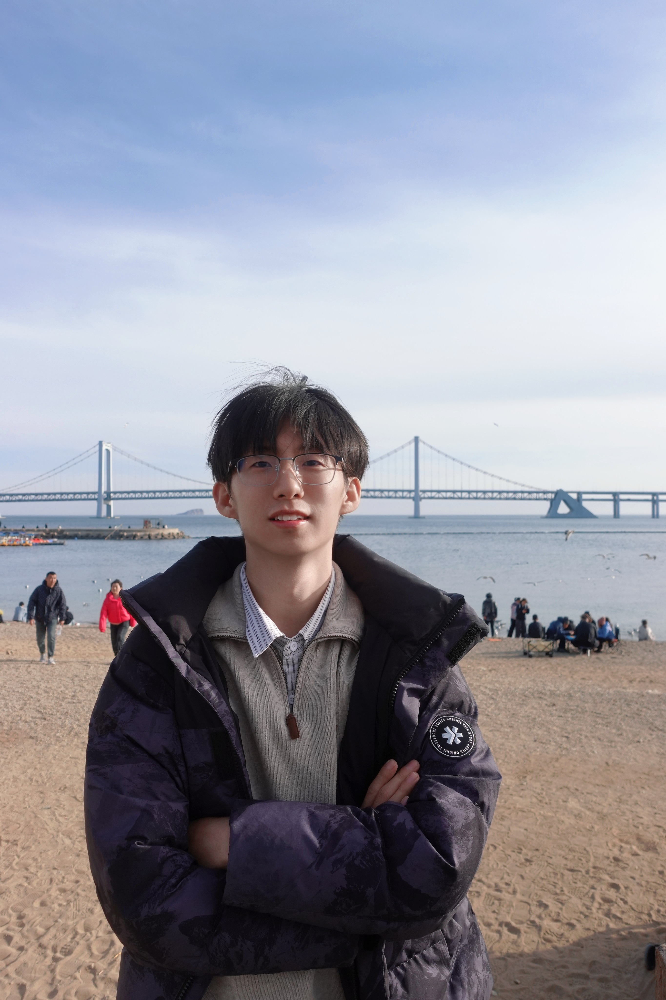

Beijing Innovation Center of Humanoid Robotics
World Model Research Intern · PKU World Model Project Lead

Ph.D. Student in Computer Science
Peking University
Hi! I’m Jiajun Cao (曹家骏), a Ph.D. student at the School of Computer Science, Peking University, advised by Prof. Shanghang Zhang. My research focuses on multimodal large models and embodied intelligence, especially efficient visual perception and vision-language-action models.
I received my B.Eng. in Artificial Intelligence from Xi’an Jiaotong University. I have worked on world models at the Beijing Innovation Center of Humanoid Robotics and on multimodal perception and autonomous driving at XPeng and NIO. Feel free to get in touch!
How can multimodal models perceive efficiently and act reliably in the physical world?
* Equal contribution. My name is highlighted.
World Model Research Intern · PKU World Model Project Lead
VLA Research Intern · PKU–XPeng Collaboration Lead
Visual token pruning and encoder distillation for driving VLA models.
Multimodal Model Research Intern
Visual distillation and complementary visual encoder fusion.
Ph.D. in Computer Science and Technology
B.Eng. in Artificial Intelligence
Conference reviewer: NeurIPS, ICML, AAAI, ECCV
Journal reviewer: IEEE TPAMI, SCIENCE CHINA Information Sciences